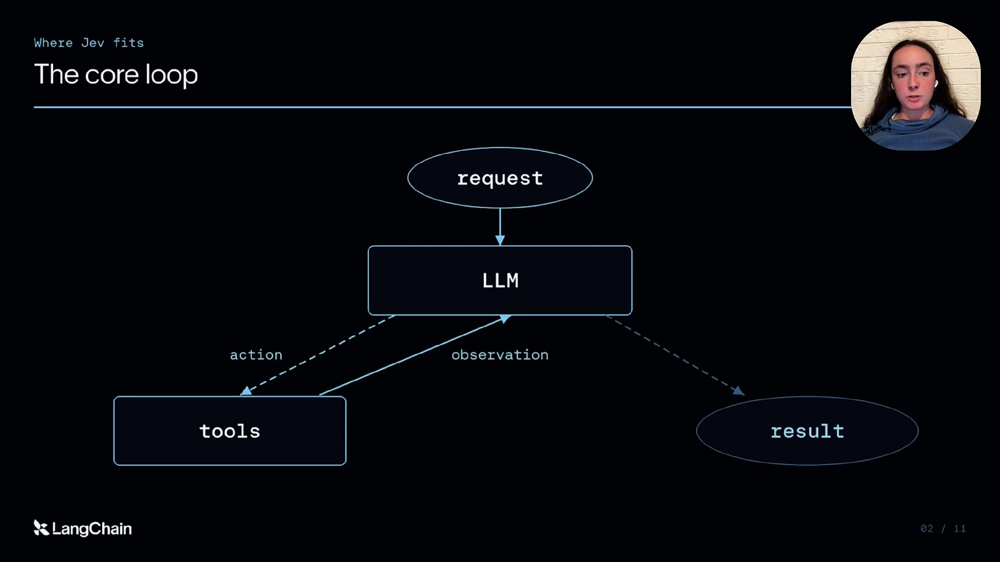
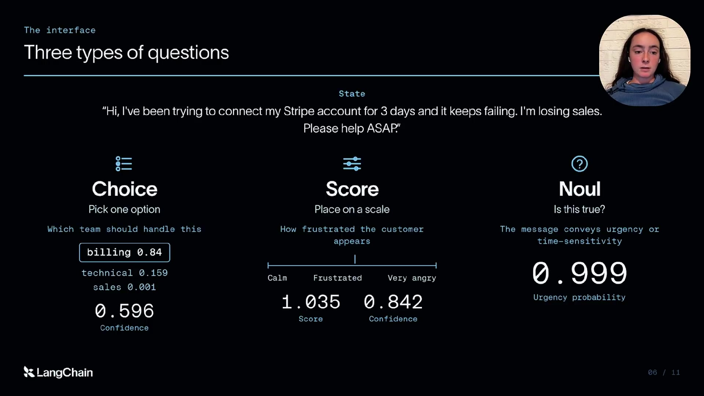
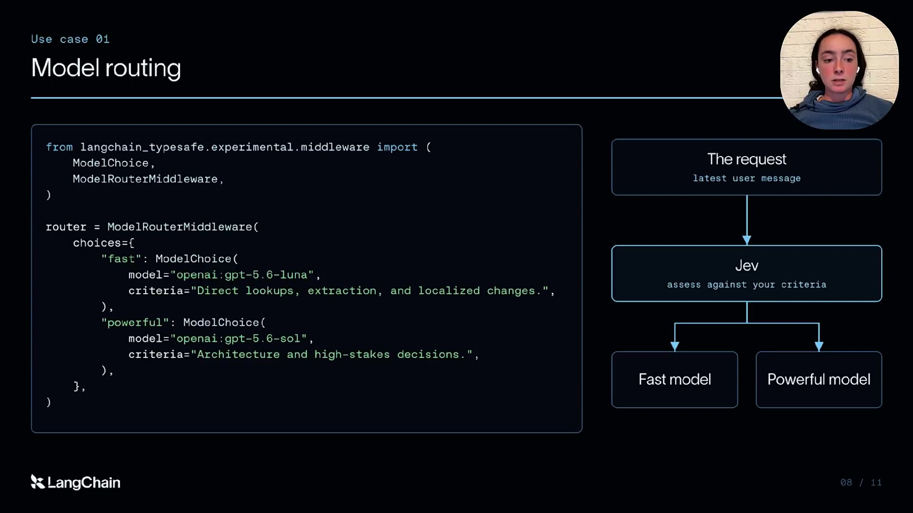
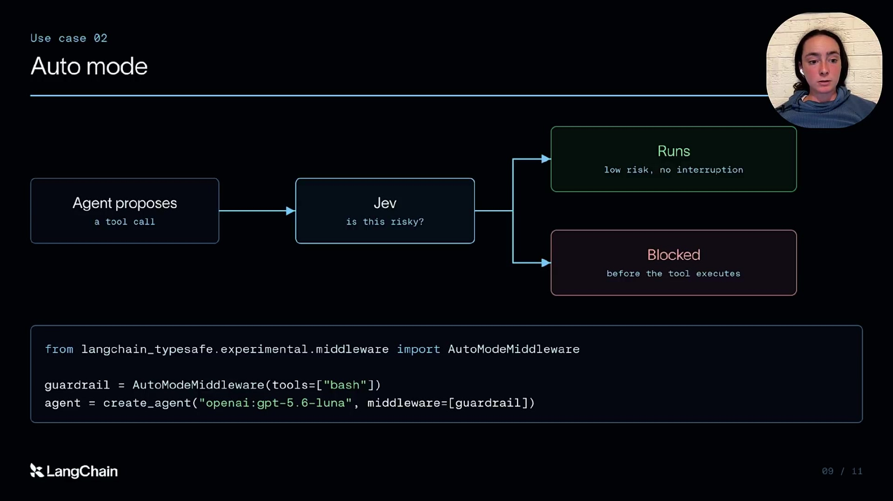
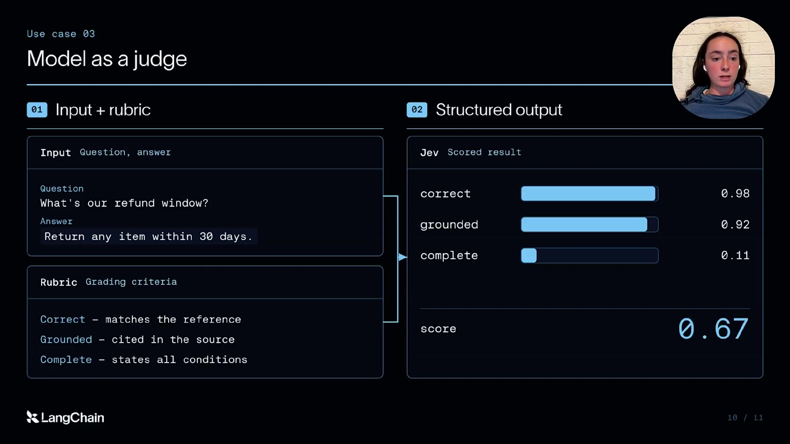

Executive summary
Turn repeated judgments into an explicit system layer
LangChain product manager Sydney Runkle starts from the familiar agent loop: a request reaches an LLM, the model selects tools, observations come back, and the loop continues until the model returns a result. Tool calling and structured outputs made this loop usable in software, but they did not make every model call fast, cheap, or predictable.
Jev is presented as a different primitive. Instead of generating prose token by token, it evaluates a supplied state against typed questions and returns probabilities, choices, or scores. The video applies that primitive to three recurring harness jobs: selecting a model, deciding whether a proposed tool call is risky, and evaluating completed agent work at production scale.
- The unit of design is a bounded decision. A good Jev task has explicit inputs, a finite answer shape, a measurable error cost, and a fallback.
- The LLM still owns generation and deep reasoning. Jev is not described as a drop-in replacement for the agent's main model.
- Latency changes which controls are practical. A slow safety classifier may be disabled by users; a fast one can remain in the loop, though speed does not establish safety.
- Cheap judgments can widen eval coverage. Lower per-trace cost makes online evaluation of more traffic and more criteria feasible.
- Claims still need local validation. Provider benchmarks and one narrow LangChain study do not establish performance for every domain, language, rubric, or risk level.
The architecture and demonstrations come from the video and LangChain's accompanying posts. The reported 20–200× speed and 40–400× cost ranges are attributed to TypeSafe. LangChain's evaluator experiment is promising but narrow; this article does not treat those numbers as independent or universal benchmarks.
Starting point
The agent loop contains more decisions than generation
An agent repeatedly asks questions such as: Which model should handle this request? Is this tool call safe enough to execute? Did the final response satisfy the rubric? Teams often send all of these questions to the same general-purpose LLM because it is already available. That choice quietly turns every small judgment into another generative inference call.

Tool calling solves the interface problem: the LLM can ask code to perform a structured action. Structured output solves another interface problem: code can receive a JSON-shaped final answer. Neither primitive changes the fact that the model generates tokens and may spend time reasoning before producing that shape. Jev's proposed role is narrower: produce the typed decision directly.
Decision contract
State in, typed answers and probabilities out
The video describes three question forms. A choice selects one option from a declared set. A score places the state on an ordered scale. A probabilistic yes/no question, called a noul in the integration, estimates whether a proposition is true. Several questions can be evaluated over the same state in one request.

Choice
Pick a route, model, queue, policy, or intent from a finite set.
Score
Estimate quality, frustration, relevance, complexity, or risk.
Yes / no probability
Estimate whether a criterion such as urgency or PII exposure holds.
A probability is not a policy. The harness must still decide what threshold triggers an action, what happens near the boundary, and whether uncertainty should escalate to a stronger model or a human. Calibration should be measured on data from the actual workflow, not inferred from a confident-looking decimal.
Use case one
Model routing: buy expensive reasoning only when it helps
An agent can use a fast model for direct lookup, extraction, and localized changes, while reserving a stronger model for architecture and high-stakes decisions. Jev evaluates the incoming request against routing criteria and returns the selected model. The decision happens before the expensive model call.

The danger is optimizing routing for cost while silently lowering task success. Build a labeled replay set from real requests, compare the routed answer with the stronger-model baseline, and measure the cost of under-routing separately from the cost of over-routing. An explicit “uncertain” path is usually more useful than forcing every request into one of two models.
Use case two
Auto mode: screen risky tool calls before execution
LangChain's example places an AutoModeMiddleware
decision between a proposed tool call and execution. Low-risk,
non-destructive calls proceed without interruption. Calls judged
risky are blocked before the tool runs. Runkle notes that she had
disabled a similar control in a coding agent because its previous
classification step made the workflow feel too slow; Jev's lower
latency made the control usable again.

Deterministic restrictions must remain authoritative: tool allowlists, scoped credentials, filesystem boundaries, confirmation requirements, transaction controls, and audit logs. A model can add semantic risk detection, but it should not be the only barrier protecting a database or production system.
Evaluate the gate for false negatives by risk class. Missing a destructive command is more consequential than unnecessarily prompting for confirmation. Thresholds should therefore differ by action, environment, user role, and reversibility. Log the proposed call, decision, probability, policy version, final outcome, and any human override.
Use case three
Online evals: turn more production traces into feedback
An evaluator receives the user input, the agent's answer, and a rubric. Jev returns typed judgments such as correctness, groundedness, completeness, or an overall score. The economic argument is straightforward: if judging is cheap and fast, builders can evaluate more traces, check more criteria, and detect regressions sooner.

LangChain later reported a small experiment on five fixed weather agent examples, repeated one hundred times per judge. In that setup, Jev matched the human binary labels on all repeated decisions, averaged 0.44 seconds per call, and showed much lower score variance than the three LLM judges tested. The authors explicitly call the result early and narrow. Five examples from one agent cannot establish cross-domain evaluator quality.
A production rollout should start in shadow mode. Compare the judge with human labels, inspect disagreements, segment results by task and language, and monitor calibration over time. Low cost can amplify a misaligned rubric just as efficiently as a good one. Keep human review for novel, disputed, or high-impact cases.
Architecture judgment
Use the narrowest reliable layer for each responsibility
| Layer | Best at | Main weakness | Harness role |
|---|---|---|---|
| Deterministic code | Exact rules, schemas, permissions, invariants | Cannot interpret every fuzzy input | Authoritative control and execution |
| Decision model | Fast classification, scoring, routing | Bounded scope and probabilistic error | Advisory choice or confidence-gated policy |
| Generative LLM | Planning, synthesis, explanation, exceptions | Higher cost, latency, and variability | Main agent reasoning and output |
| Human | Novelty, accountability, disputed high-impact cases | Limited throughput and availability | Escalation, policy ownership, judge alignment |
Good first deployments
Model recommendations, queue routing, retrieval ranking, non-blocking quality signals, and shadow-mode evaluation.
Require stronger controls
Destructive actions, security boundaries, compliance decisions, irreversible state changes, and user-visible denial.
Implementation playbook
Build one bounded decision at a time
- Name the decision. Write one business-readable question and enumerate its possible outputs, including unknown or escalate.
- Define the state. Send only the information the decision requires; document sensitive data and retention rules.
- Label replay examples. Include ordinary cases, rare failures, adversarial inputs, and expensive mistakes.
- Choose the policy. Convert probabilities into actions with thresholds that reflect asymmetric error costs.
- Run in shadow mode. Observe agreement, latency, cost, calibration, and segment-specific failures before control.
- Add fallback and audit. Preserve the decision, model version, state hash, outcome, override, and final result.
For a BA-facing agent platform, expose this as a Decision step, not as a raw provider prompt. The builder should fill in the question, outcomes, examples, consequence level, threshold, fallback, and owner. The platform can compile that contract into Jev or another classifier while keeping business intent portable.
Video guide
Jump to the important moments
Sources and limitations
What this article is based on
- LangChain video: Building a Harness with Jev — primary narration, demonstrations, captions, and chapter timing.
- LangChain: Building a Harness with Jev — integration shape, routing middleware, and risk-gate context.
- LangChain: Jev-as-a-Judge for Agent Evals — evaluator method, results, limitations, and reproducibility notes.
- LangChain: Jev is now available in LangSmith Evals — production setup, feedback-key mapping, filtering, charts, alerts, and online-evaluator workflow.
The English captions are creator-provided. Screenshots are direct 1920×1080 frames from the source video and are included to explain the demonstrated architecture. No Jev API calls or independent benchmark runs were performed for this summary. Provider behavior, integrations, and pricing may change after the stated summary date.